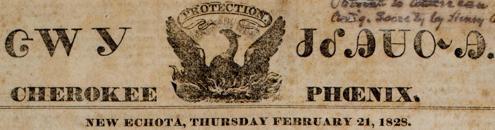

Directions: Work through the five stations in order. For each record, state whose law it claims to speak, and what power stands behind the claim. At the end, complete the table and judge whether removal was a policy of law or of force. All five stations are verbatim documents. Cuts are marked with ellipses and disclosed in the Source lines.
Source: U.S. Congress, Indian Removal Act, May 28, 1830, Avalon Project transcription of the Statutes at Large (4 Stat. 411). Cuts are marked with ellipses and disclosed here.
An Act to provide for an exchange of lands with the Indians residing in any of the states or territories, and for their removal west of the river Mississippi.
SEC. 1. Be it enacted by the Senate and House of Representatives of the United States of America, in Congress assembled, That it shall and may be lawful for the President of the United States to cause so much of any territory belonging to the United States, west of the river Mississippi, not included in any state or organized territory, and to which the Indian title has been extinguished, as he may judge necessary, to be divided into a suitable number of districts, for the reception of such tribes or nations of Indians as may choose to exchange the lands where they now reside, and remove there [...]
SEC. 7. [...] Provided, That nothing in this act contained shall be construed as authorizing or directing the violation of any existing treaty between the United States and any of the Indian tribes.
SEC. 8. [...] for the purpose of giving effect to the provisions of this act, the sum of five hundred thousand dollars is hereby appropriated [...]
Whose law does this station claim to speak? Name the body that made it and the officer it empowers, and state in the act's own words what the president may offer, and to whom.
What power stands behind the claim? Point to the two sections that show the act's limits and its muscle: the treaty proviso in Section 7, and the money in Section 8. State what each one does.
Source: Andrew Jackson, Message to Congress "On Indian Removal," December 6, 1830, as recorded in the audited TPSP bank record jackson-indian-removal-message-1830 (Yale Avalon Project, via Re-Imagining Migration). Cuts are marked with ellipses and disclosed here.
It gives me pleasure to announce to Congress that the benevolent policy of the Government, steadily pursued for nearly thirty years, in relation to the removal of the Indians beyond the white settlements is approaching to a happy consummation. Two important tribes have accepted the provision made for their removal at the last session of Congress, and it is believed that their example will induce the remaining tribes also to seek the same obvious advantages.
[...] It will separate the Indians from immediate contact with settlements of whites; free them from the power of the States; enable them to pursue happiness in their own way and under their own rude institutions; will retard the progress of decay, which is lessening their numbers, and perhaps cause them gradually, under the protection of the Government and through the influence of good counsels, to cast off their savage habits and become an interesting, civilized, and Christian community.
What good man would prefer a country covered with forests and ranged by a few thousand savages to our extensive Republic, studded with cities, towns, and prosperous farms [...] occupied by more than 12,000,000 happy people, and filled with all the blessings of liberty, civilization and religion?
Whose law does this station claim to speak? Jackson is defending a law, not making one. State whose law he is selling here, and the word he uses in his first sentence to describe the policy.
What power stands behind the claim? Jackson promises the Native nations protection and happiness under the Government. Set that promise beside his closing question, and state whose benefit the question itself argues for.
Source: U.S. Supreme Court, Chief Justice John Marshall, Worcester v. Georgia, 1832, as recorded in the audited TPSP bank record worcester-v-georgia-1832 (Justia). Samuel Worcester, a missionary living in Cherokee country with the nation's permission, had been convicted under a Georgia law for residing there without a license from Georgia's governor. Cuts are marked with ellipses and disclosed here.
Protection does not imply the destruction of the protected.
[...] The Cherokee nation, then, is a distinct community, occupying its own territory, with boundaries accurately described, in which the laws of Georgia can have no force, and which the citizens of Georgia have no right to enter but with the assent of the Cherokees themselves, or in conformity with treaties and with the acts of Congress. The whole intercourse between the United States and this nation is, by our Constitution and laws, vested in the Government of the United States.
[...] The act of the State of Georgia under which the plaintiff in error was prosecuted is consequently void, and the judgment a nullity.
Whose law does this station claim to speak? State the two legal authorities Marshall rests the holding on, and the sentence in which he places the whole intercourse with the Cherokee.
What power stands behind the claim? A court has no army and no budget. State what this judgment needs in order to change anything in Georgia, and what the reading tells you it received.
Source: John Ross and the Cherokee delegation, Memorial and Protest of the Cherokee Nation, 1836, and Ross's letter to the Senate and House of Representatives, September 28, 1836, as printed in the Senate documents (Executive Document 286, 24th Congress) and transcribed by the National Park Service; the records are held by the National Archives. Cuts are marked with ellipses and disclosed here. The masthead below is from the nation's own newspaper.

An instrument purporting to be a treaty with the Cherokee people, has recently been made public by the President of the United States [...] This instrument, the delegation aver before the civilized world, and in the presence of Almighty God, is fraudulent, false upon its face, made by unauthorized individuals, without the sanction, and against the wishes of the great body of the Cherokee people. Upwards of fifteen thousand of those people have protested against it, solemnly declaring they will never acquiesce.
By the stipulations of this instrument, we are despoiled of our private possessions, the indefeasible property of individuals. [...] We are denationalized; we are disfranchised. We are deprived of membership in the human family! We have neither land nor home, nor resting place that can be called our own.
The instrument in question is not the act of our Nation; we are not parties to its covenants; it has not received the sanction of our people. The makers of it sustain no office nor appointment in our Nation [...] by which they hold, or could acquire, authority to assume the reins of Government, and to make bargain and sale of our rights, our possessions, and our common country.
Whose law does this station claim to speak? Name the body the delegation says alone could make a treaty for the Cherokee, and the number of Cherokee the memorial says protested against this one.
What power stands behind the claim? The delegation commands no troops and no court. State what it appeals to instead, in the memorial's own address, and what it says the instrument takes away beyond land.
Source: Treaty of New Echota, December 29, 1835, Avalon Project transcription (text as printed in the Statutes at Large, 7 Stat. 478). The treaty was signed for the United States by commissioners William Carroll and John F. Schermerhorn, and for the Cherokee by Major Ridge, John Ridge, Elias Boudinot, and others of their party. Principal Chief John Ross did not sign it. Cuts are marked with ellipses and disclosed here.
[From the preamble] Whereas the Cherokees are anxious to make some arrangements with the Government of the United States whereby the difficulties they have experienced by a residence within the settled parts of the United States under the jurisdiction and laws of the State Governments may be terminated and adjusted [...]
ARTICLE 1. The Cherokee nation hereby cede relinquish and convey to the United States all the lands owned claimed or possessed by them east of the Mississippi river, and hereby release all their claims upon the United States for spoliations of every kind for and in consideration of the sum of five millions of dollars to be expended paid and invested in the manner stipulated and agreed upon in the following articles [...]
Whose law does this station claim to speak? The preamble says the Cherokees are anxious to make arrangements. Set that sentence beside the signers named in the Source line, and state whose voice the treaty claims, and whose it has.
What power stands behind the claim? Once the Senate ratified this treaty in May 1836 by a single vote, state what the treaty supplied that the Removal Act and Georgia's laws had not, and what followed in 1838.
Complete the table. Use short entries drawn from the stations.
| Record | Whose law it claims to speak | What power stands behind the claim |
|---|---|---|
| The Removal Act (Station 1) | ||
| Jackson's message (Station 2) | ||
| Worcester v. Georgia (Station 3) | ||
| The memorial (Station 4) | ||
| Treaty of New Echota (Station 5) |
Deliver the verdict. Was removal a policy of law or of force? Write a short paragraph using evidence from at least two stations, and answer the strongest argument on the other side.
Whose law? The law of the United States Congress, spoken to the president it empowers. The act authorizes the president to lay off districts west of the Mississippi, outside any state or organized territory and where Native title has already been extinguished, and to exchange those districts with tribes or nations residing inside the states or territories for the whole or part of the land they claim and occupy. Its title states its double subject plainly: an exchange of lands, and removal west of the Mississippi. (Blueprint 3)
What power stands behind it? The proviso and the appropriation pull in opposite directions, and both belong in a full answer. Section 7 promises that nothing in the act authorizes or directs the violation of any existing treaty with any Native nation, which is the act's stated limit. Section 8 appropriates five hundred thousand dollars to give the act effect, which is its muscle: a funded executive program of treaty making, surveying, and transport. The act on its face authorizes exchange by agreement; the stations that follow show what agreement came to mean. (Blueprint 3)
Whose law? Jackson speaks for the administration executing Congress's law, and he is selling the Removal Act's policy to Congress and, through the newspapers, to the public. His first sentence calls removal the benevolent policy of the Government, steadily pursued for nearly thirty years, approaching a happy consummation, and reports that two tribes have already accepted the provision Congress made at its last session. (Blueprint 3)
What power stands behind it? The power of a popular president's framing. Jackson promises the nations separation from white settlements, freedom from the power of the states, and, under federal protection, gradual transformation into a civilized and Christian community. His closing question reverses the ledger: a country ranged by a few thousand savages against a republic of more than 12,000,000 happy people. The benefit argued in the question runs to the settlers and the states. Students should name the move: benevolence is the language, and replacement is the arithmetic. (Blueprint 3 and 4)
Whose law? The law of the Constitution and the treaties. Marshall holds that the Cherokee nation is a distinct community occupying its own territory, in which the laws of Georgia can have no force, that Georgians may not enter it without the Cherokees' assent or in conformity with treaties and acts of Congress, and that the whole intercourse between the United States and the nation is vested by the Constitution and laws in the federal government. The Georgia act under which Worcester was prosecuted is consequently void, and the judgment against him a nullity. His sentence on protection answers Georgia's guardianship claim directly: protection does not imply the destruction of the protected. (Blueprint 4)
What power stands behind it? Only enforcement by others. A judgment needs a marshal, a president willing to act, or a state willing to comply. Georgia refused to obey and kept Worcester at hard labor, President Jackson declined to enforce the ruling against the state, and Worcester was freed in January 1833 only by a pardon from Georgia's governor. The station's power, in the end, is the written holding itself, which settled the law and changed nothing on the ground in 1832. (Blueprint 4)
Whose law? The law of the Cherokee Nation, spoken by its accredited delegation under Principal Chief John Ross. The memorial holds that a treaty for the nation can be made only by those the nation authorizes: the instrument from New Echota was made by unauthorized individuals, without the sanction and against the wishes of the great body of the Cherokee people, and upwards of fifteen thousand Cherokee protested against it, declaring they would never acquiesce. Its makers held no office or appointment in the nation by which they could make bargain and sale of the nation's rights, possessions, and common country. (Blueprint 4)
What power stands behind it? Appeal, record, and number. The delegation avers its charge before the civilized world and in the presence of Almighty God, and addresses Congress as the body that can still refuse the instrument effect. What it says the treaty takes goes beyond land: private possessions, legal self defense, membership in the human family itself, leaving the people with neither land nor home nor resting place that can be called their own. The power behind the claim is the documented refusal of nearly the whole nation, which is why the petition's count of protesters is evidence and not decoration. (Blueprint 4)
Whose law? The treaty claims to speak for the Cherokee nation in general council, and its preamble describes the Cherokees as anxious to arrange an end to their difficulties under state law. The signatures tell the narrower truth the memorial documents: the Cherokee signers were Major Ridge, John Ridge, Elias Boudinot, and their party, a minority acting while the nation's government and its accredited delegation opposed any cession on these terms, and Cherokee law since 1829 had made unauthorized sale of the nation's land a capital offense. John Ross did not sign. (Blueprint 3 and 4)
What power stands behind it? Ratification. Once the Senate ratified the treaty in May 1836 by a single vote, the cession in Article 1, all Cherokee lands east of the Mississippi for five million dollars, stood as law in treaty form. The treaty supplied the legal cover the earlier stations lacked, and under its two year deadline, in May 1838, federal troops rounded up some sixteen thousand Cherokee and marched them west. (Blueprint 3 and 4)
Table, expected entries. The Removal Act: the law of Congress; behind it, five hundred thousand dollars and an exchange program, bounded on its face by a promise not to violate existing treaties. Jackson's message: the administration defending Congress's act; behind it, the president's popularity and a benevolence argument whose arithmetic favors the settlers. Worcester: the law of the Constitution and the treaties; behind it, a written judgment and nothing else. The memorial: the law of the Cherokee Nation; behind it, upwards of fifteen thousand protesters and an appeal to Congress. The treaty: it claims the law of the Cherokee nation in council; behind it, Senate ratification by one vote and, in 1838, the army. Verdict paragraphs earn full credit on either side when argued from the stations. The law answer rests on the sequence itself: an act, a message, a ratified treaty, appropriations, and orders, with the proviso of Section 7 quoted against the outcome. The force answer rests on what each legal form concealed: a House margin of five votes, a judgment left unenforced, a treaty signed by unauthorized men against the protest of nearly the whole nation, and a march conducted by troops through a winter. Strong answers concede the other side's best fact first.